1080E10 tank fuel vapour separator - r + r
- Path
- Procedures > 10 ENGINE > 1080 EXHAUST EMISSION CONTROL SYSTEM > 1080E evaporation control system > 1080E10 tank fuel vapour separator - r + r
- Kind
- repair procedure (removal / refitting; the operation number is the code)
- Applies to
- engines: 1.6 TS , 1.8 TS, 2.0 JTS, 2.5 V6, 3.2 V6, 2.0 JTS; all production periods
- Interactive page
- https://sloeber94.github.io/elrnDB-a156/en/#/3237596
Applies to: engines: 2.5 V6, 3.2 V6; all production periods
 Removing
Removing
 Refitting
RefittingPosition the vehicle on the lift.
1. Undo the bolts (1a) and move the fuel vapour separator (1b).
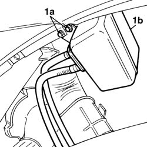
Applies to: engines: 2.5 V6, 3.2 V6; all production periods
1. Disconnect the vapour supply pipe to the canister from the overturn safety valve on the fuel vapour separator.
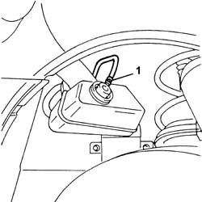
Applies to: engines: 2.5 V6, 3.2 V6; all production periods
1. Undo the nuts (1a) and the bolts (1b), then remove the protection (1c) for the fuel filler pipe.
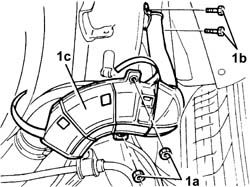
Applies to: engines: 2.5 V6, 3.2 V6; all production periods
1. Disconnect the two rapid attachments for the vapour supply pipes from the multi-purpose valves on the tank to the fuel vapour separator.
Remove the fuel tank vapour separator.
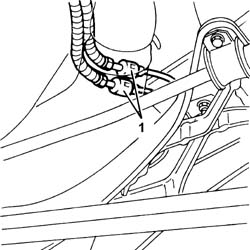
Applies to: engines: 2.5 V6, 3.2 V6; all production periods
Refitting
RemovingPlace the fuel vapour separator in its housing and connect the two rapid attachments for the pipes connected to the multi-purpose valves on the tank.
Fit the protection for the fuel filler pipe and fix it using the nuts and bolts.
Connect the vapour supply pipe to the canister to the overturn safety valve on the fuel vapour separator.
Fix the fuel vapour separator using the bolts.
Remove the vehicle from the ramp.
Applies to: engines: 1.6 TS , 1.8 TS; all production periods
Removing
RefittingPlace the car on the lifting bridge.
Disconnect battery negative pole.
 | Name | Connector |
|---|---|---|
- | Battery |
1. Unscrew fixing screws (1a) and move fuel vapour tank (1b) away from its seating.
Applies to: engines: 1.6 TS , 1.8 TS; all production periods
1. Remove clamp (1a) and disconnect pipe (1b) from anti-tilting valve.
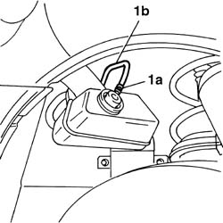
Applies to: engines: 1.6 TS , 1.8 TS; all production periods
1. Unscrew nuts (1a) and screws (1b), then remove plastic guard of fuel inlet pipe.
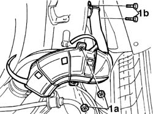
Applies to: engines: 1.6 TS , 1.8 TS; all production periods
1. Disconnect the two anti-evaporation system pipes (1a) from rapid clutches (1b), then remove fuel vapour separator.
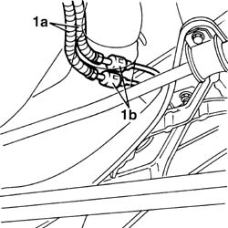
Applies to: engines: 1.6 TS , 1.8 TS; all production periods
Refitting
RemovingRefit fuel vapour separator in its seating, then connect rapid clutches of anti-evaporation system pipes again.
Refit plastic guard of fuel inlet pipe.
Connect anti-tilting valve to its pipe and fix it with a new clamp.
Fix oil vapour separator to its bracket.
Connect battery negative pole.
Applies to: engines: 2.0 JTS, 2.0 JTS; all production periods
Removing
RefittingPosition the vehicle on the ramp.
Proceed with removal 4450B08 right rear wheel r r .
Proceed with removal 7055B43 REAR WHEEL ARCH liner (one), left or right - R.R. .
1. Undo the nuts (1a) and remove the plastic protection (1b) on the fuel filler pipe after releasing it from the retaining bands.
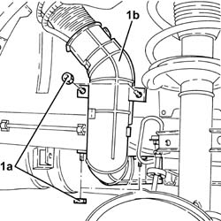
Applies to: engines: 2.0 JTS, 2.0 JTS; all production periods
1. Disconnect the rapid attachments for the fuel vapour recovery pipes from the float valves to the fuel vapour separator.
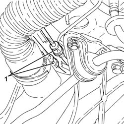
Applies to: engines: 2.0 JTS, 2.0 JTS; all production periods
1. Disconnect the rapid attachment for the fuel vapour supply pipe from the separator to the canister.
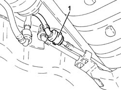
Applies to: engines: 2.0 JTS, 2.0 JTS; all production periods
Lower the fuel tank as much as necessary to release from the tank and remove the supply pipe from the fuel vapour separator to the intermediate connector (pipe integrated with fuel vapour separator) 1040A10 fuel tank - r + r and decant fuel .
1. Undo the bolts (1a) and remove the fuel tank vapour separator (1b) complete with integrated pipes.
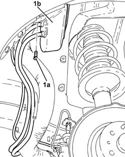
Applies to: engines: 2.0 JTS, 2.0 JTS; all production periods
Refitting
RemovingRefit the fuel tank vapour separator in its seating and secure it with its bolts.
Position and secure to the tank the supply pipe from the fuel vapour separator to the intermediate connector, then refit the fuel tank in its seating 1040A10 fuel tank - r + r and decant fuel .
Connect the rapid attachment of the fuel vapour supply pipe from the separator to the canister.
Connect the rapid attachments for the fuel vapour recovery pipes from the float valves to the fuel vapour separator.
Refit in its seating the plastic protection of the fuel filler pipe and secure it with the bands and nuts.
Proceed with refitting 7055B43 REAR WHEEL ARCH liner (one), left or right - R.R. .
Proceed with refitting 4450B08 right rear wheel r r .
Remove the car from the ramps.